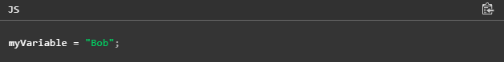

JavaScript – это язык программирования, который добавляет интерактивность на ваш веб-сайт (например: игры, отклик при нажатии кнопок или при вводе данных в формы, динамические стили, анимация). Эта статья поможет вам начать работать с этим захватывающим языком и даст вам представление о том, на что он способен.
Что такое JavaScript на самом деле?
JavaScript ("JS" для краткости) — это полноценный динамический язык программирования, который применяется к HTML документу, и может обеспечить динамическую интерактивность на веб-сайтах. Его разработал Brendan Eich, сооснователь проекта Mozilla, Mozilla Foundation и Mozilla Corporation.
Пример "hello world"
Предыдущий раздел звучит очень многообещающе, и это на самом деле так — JavaScript является одной из самых перспективных веб-технологий, и когда вы освоитесь и начнёте использовать его, ваши веб-сайты перейдут в новое измерение мощи и креативности.
Тем не менее, с JavaScript немного более сложно освоиться, чем с HTML и CSS. Вам придётся начать с малого, продолжая изучение небольшими шагами. Для начала мы покажем вам, как добавить некоторые основы JavaScript на вашу страницу, чтобы создать "hello world!" пример
1.Для начала перейдите на ваш тестовый сайт и создайте папку с именем 'scripts' (без кавычек). Затем, в новой папке скриптов, которую вы только что создали, создайте новый файл с именем main.js. Сохраните его в вашей папке scripts.
2.Далее перейдите в ваш index.html файл и введите следующий элемент на новой строке прямо перед закрывающим тегом
:
3.В основном этот код выполняет ту же работу, что и элемент <link> для CSS — добавляет JavaScript на страницу, позволяя ему взаимодействовать с HTML (и CSS, и чем-нибудь ещё на странице).
4.Теперь добавьте следующий код в файл main.js
Теперь убедитесь, что HTML и JavaScript файлы сохранены, и загрузите index.html в браузере. Вы должны увидеть что-то вроде этого:
Переменные
Переменные — это контейнеры, внутри которых вы можете хранить значения. Вы начинаете с того, что объявляете переменную с помощью ключевого слова var (не рекомендуется, продолжайте читать, чтобы получить объяснения) или let, за которым следует любое имя, которым вы захотите её назвать:
После объявления переменной вы можете присвоить ей значение:

Вы можете сделать обе эти операции на одной и той же строке, если вы захотите:
Обратите внимание, что переменные имеют разные типы данных:
Операторы
operator (en-US) — это математический символ, который производит результат, основанный на двух значениях (или переменных). В приведённой ниже таблице вы можете увидеть некоторые из наиболее простых операторов, наряду с некоторыми примерами, которые опробуете в JavaScript консоли.
Условия
Условия — это конструкции в коде, которые позволяют проверить истинность или ложность выражения и выполнить другой код в зависимости от полученного результата. Самая распространённая форма условия — инструкция if ... else. Например:
Выражение внутри if ( ... ) — это проверка, которая использует тождественный оператор (как описано выше), чтобы сравнить переменную iceCream со строкой chocolate и увидеть равны ли они. Если это сравнение возвращает true, выполнится первый блок кода. Если нет, этот код пропустится и выполнится второй блок кода, после инструкции else.
Функции
Функции - способ упаковки функциональности, которую вы хотите использовать повторно. Всякий раз, когда вам нужна определённая процедура, вы можете просто вызвать функцию по её имени, а не переписывать весь код каждый раз. Вы уже видели некоторые функции, описанные выше, например:
Эти функции, document.querySelector и alert, встроены в браузер для того, чтобы вы использовали их всякий раз, когда вам это необходимо.
Если вы видите что-то, что выглядит как имя переменной, но имеет после него скобки — (), скорее всего, это функция. Функции часто принимают аргументы — биты данных, которые им необходимы для выполнения своей работы. Они находятся в скобках, и разделяются запятыми, если присутствует более одного аргумента.
Например, функция alert() вызывает всплывающий блок, появляющийся в окне браузера, но мы должны дать ему строку в качестве аргумента, чтобы сказать функции, что писать во всплывающем блоке.
Хорошая новость заключается в том, что вы можете определить свои собственные функции — в следующем примере мы напишем простую функцию, которая принимает два числа в качестве аргументов и умножает их:
Попробуйте запустить вышеупомянутую функцию в консоли, затем попробуйте изменить аргументы, например:
События
Для создания действительной интерактивности на веб-сайте вам необходимы события. События — это структура, которая следит за тем, что происходит в браузере, а затем позволяет вам запускать код в ответ на это. Наиболее очевидным является событие клика (en-US), которое вызывается браузером, когда мы щёлкаем по чему-то мышью. Для демонстрации этого события введите следующую команду в вашу консоль, а затем щёлкните по текущей веб-странице:
Существуют множество способов прикрепить событие к элементу. Здесь мы выбираем элемент и устанавливаем ему обработчик свойства onclick (en-US) анонимной функцией (т.е. безымянной) которая содержит код, который мы хотим запустить для события клика.